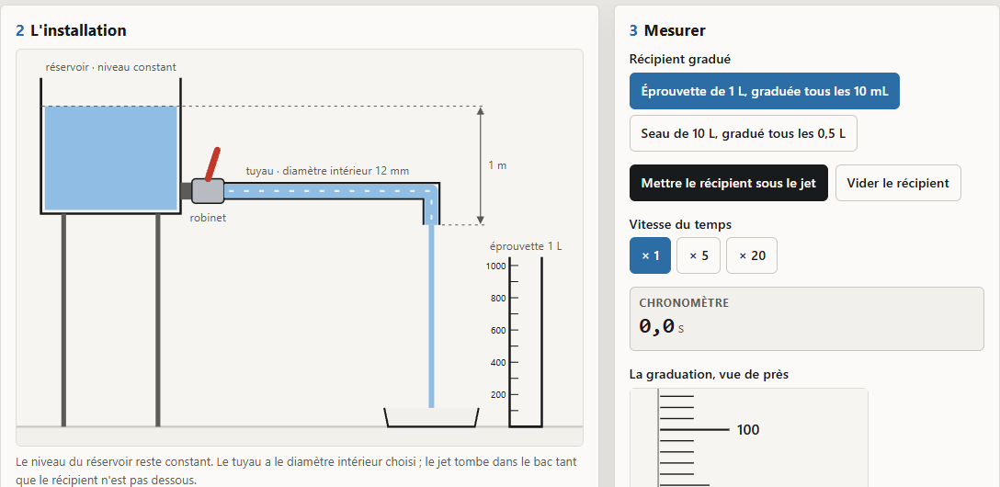
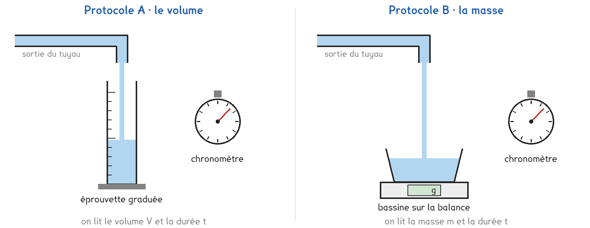

Tle Bac Pro · MMCM · MVTR · TP sur simulation SIM-04
Combien de temps faut-il pour remplir l'arrosoir, et à quelle vitesse l'eau avance-t-elle dans le tuyau ?
2 figures
Sujet. Au fond du jardin, une cuve récupère l’eau de pluie. Un robinet à sa base alimente un tuyau, et il faut remplir un arrosoir de 10 L.
Problématique : combien de temps faut-il pour remplir l’arrosoir, et à quelle vitesse l’eau avance-t-elle dans le tuyau ?
La simulation. Ouvrir « Le débit d’un fluide » : le fichier debit.html, sur l’ENT ou la clé du professeur.

a) Compléter le tableau des grandeurs du TP.
| La grandeur | Son symbole | Son unité SI | Une unité courante |
|---|---|---|---|
| le débit en volume | Qv | m³/s | L/min |
| le débit en masse | Qm | ……………… | kg/min |
| la vitesse moyenne | v | ……………… | km/h |
Pour passer d’une unité de débit à l’autre, on convertit le volume et la durée séparément.
b) Convertir. Les deux premiers sont faits.
| 1 min = 60 s | 1 h = ……… min | 1 m³ = ……… L |
|---|---|---|
| 6 L/min = 6 ÷ 60 = 0,1 L/s | 6 L/min = ……… m³/h | 0,1 L/s = ……… m³/s |
Un litre d’huile de table a une masse de 0,92 kg : ρhuile = 0,92 kg/L.
c) Calculer la masse de 5 L d’huile, puis le volume de 1,38 kg d’huile.
m = ………………………………… · V = …………………………………
Deux protocoles répondent à la même question. Une partie de la classe prend A, l’autre prend B, et on compare à la fin.

Protocole A · le volume. On glisse un récipient gradué sous le jet pendant une durée mesurée au chronomètre, puis on lit le volume recueilli : Qv = V ÷ t.
Protocole B · la masse. On glisse une bassine posée sur une balance tarée, pendant une durée mesurée, puis on lit la masse recueillie : Qm = m ÷ t.
d) Compléter le tableau pour comparer les deux protocoles.
| Protocole A · le volume | Protocole B · la masse | |
|---|---|---|
| Ce qu’on lit | ……………………………… | ……………………………… |
| Le débit obtenu directement | Qv · Qm | Qv · Qm |
| Une limite | ……………………………… | ……………………………… |
Le choix se fait maintenant ; le professeur peut imposer celui qui reste disponible.
e) Quel protocole prenez-vous ? Justifier en une phrase.
Je prends le protocole ……… parce que ……………………………………………………………………
f) Avant de mesurer, on passe du tuyau de 12 mm à un tuyau de 8 mm. Entourer.
Le débit sera : plus grand · à peu près le même · plus petit.
La vitesse de l’eau dans le tuyau sera : plus grande · la même · plus petite.
Avant de commencer. Dans la carte 1, régler Eau, 12 mm et Ouverture du robinet sur 20 %. Laisser Vitesse du temps sur × 1 : le chronomètre doit être juste.
g) Schématiser l’installation ; flécher l’écoulement, marquer S et 1 m.
Le schéma se dessine sur la feuille du TP.
h) Relever et calculer, avec ρeau = 1,00 kg/L et ρhuile = 0,92 kg/L.
| Le réglage | Eau, 12 mm | Eau, 8 mm | Huile, 12 mm |
|---|---|---|---|
| Durée t (s) | ………… | ………… | ………… |
| V (L) ou m (kg) lu | ………… | ………… | ………… |
| Qv (L/min) | ………… | ………… | ………… |
| Qm (kg/min) | ………… | ………… | ………… |
| Qv (m³/h) | ………… | ………… | ………… |
La vitesse moyenne dans le tuyau se calcule avec le débit en m³/s et la section en m².
i) Calculer la vitesse moyenne de l’eau dans les deux tuyaux.
| Le tuyau | 12 mm | 8 mm |
|---|---|---|
| Section S = π × D² ÷ 4 (m²) | ……………………… | ……………………… |
| Qv (m³/s) | ……………………… | ……………………… |
| v = Qv ÷ S (m/s) | ……………………… | ……………………… |
j) Votre prévision f est-elle vérifiée ? Pourquoi la vitesse change-t-elle autant ?
k) Comparer avec l’autre protocole : même débit en masse, eau, 12 mm ?
Le débit en masse est le même en tout point du tuyau. Au bout, on visse un embout de 4 mm.
l) On suppose que le débit ne change pas. Calculer la vitesse de l’eau dans l’embout.
m) Avec l’huile, le débit en volume a-t-il changé ? Proposer une explication.
n) Citer deux différences entre la simulation et une vraie cuve de jardin.
o) Répondre à la problématique : durée pour 10 L, vitesse dans le tuyau.
Ce que ce TP a établi, et qui vaut pour tout liquide qui s’écoule :
À RETENIR
Le débit en volume est le volume écoulé par seconde : Qv = V ÷ t, en m³/s. Le débit en masse est la masse écoulée par seconde : Qm = m ÷ t, en kg/s. Ils sont liés par la masse volumique : Qm = ρ × Qv.
La vitesse moyenne dans un tuyau de section S vaut v = Qv ÷ S. Le débit en masse est le même en tout point du tuyau : là où la section rétrécit, le liquide va plus vite.
TP sur simulation de physique-chimie, terminale. Le travail se fait sur la feuille du TP : cette page en est la version à l'écran, sans les lignes à remplir. Rien n'est enregistré.